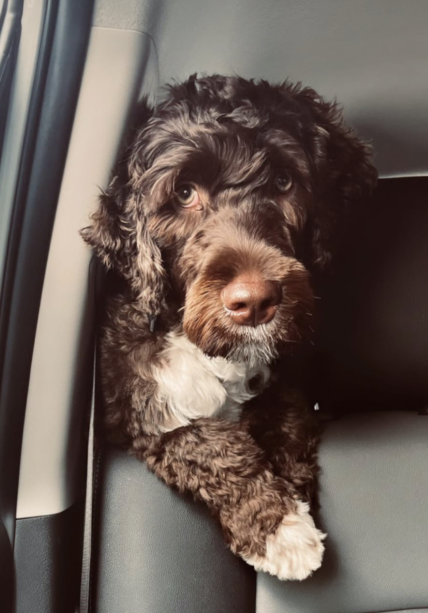

A little bit about me.
I was born in Mexico but rasied in Oahu, Hawaii. I started photography during my teenage years back home in Hawaii and absolutly loved it. During the begining I would shoot randomly with friends just enjoying the present just like majority of people captuing good times. It wasnt until my partenr and I moved to Seattle, Washington and worked with infants and toddlers that my passion for photography grew.
My goal is to capture those heart warming moments a child gives to their parents. Looking back at childhood photographs brings back forgotten emotions.
Recent Photoshoots

Ethan and James
Oliver
